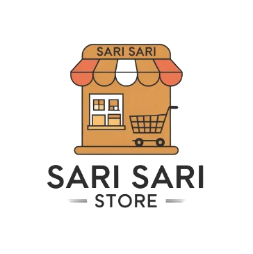

Technical Skills
- Technical Support
- Field Security System Technician
- System Administration
- Microsoft Office
- Cyber Security Threat Monitoring Level 1
INTRODUCTION
I am a Bachelor of Science in Information Technology graduate with practical experience in technical support, troubleshooting, data encoding, and office assistance. I am eager to apply my IT knowledge in a professional environment, continue developing my skills, and grow as an IT professional.
About Me
Bachelor of Science in Information Technology graduate with practical experience providing technical support, data encoding, and office assistance during a 3-month internship. Hands-on experience with hardware and software troubleshooting, Windows 10/11, Linux, Microsoft Office applications, data backup, basic network troubleshooting and security awareness. Seeking an opportunity to apply technical knowledge, strengthen problem-solving skills, and build a career in IT Support while contributing to organizational success.
My background reflects hands-on experience in troubleshooting, technical assistance, and support-oriented tasks developed through OJT and Academic training.
Skills
Certifications
Issuing Organization: Cisco Networking Academy
Date: May 23, 2026
Issuing Organization: Cisco Networking Academy
Date: May 22, 2026
Issuing Organization: Cisco Networking Academy
Date: May 22, 2026
Issuing Organization: Eastwood College of Science and Technology
Date: July 04, 2025
Organization: Municipality of Dinalupihan, Bataan
Date: August 24, 2024
Organization: Municipality of Hermosa, Bataan
Date: July 18, 2026
Experience
Information Technology Intern (On-the-Job Trainee)
Data Encoder
Projects
Java • Firebase • Android Studio • Google Maps API
Developed an emergency booking mobile application focused on accessibility, booking management, and real-time support.

Inventory AppJava • Firebase • Android Studio • Kotlin
Created a practical inventory solution for monitoring stock and supporting efficient store operations.
Firebase • Java • Android Studio
Built a messaging application with authentication, realtime chat, media sharing, and location sharing features.
HTML • CSS • JavaScript • E-commerce UI
Designed a polished perfume marketplace experience inspired by Shopee, focused on product browsing, search, and secure online ordering.
Resume
I am a BSIT graduate with practical experience in technical support, troubleshooting, office operations, and administrative work. I am prepared to bring a dependable and professional approach to an entry-level IT role.
Contact
Whether you are looking for support-oriented IT for your team, I would be glad to connect.
 darelledoriaboragay@gmail.com
darelledoriaboragay@gmail.com Bataan, Philippines
Bataan, Philippines linkedin.com/in/darelle-boragay-9136ab3ba
linkedin.com/in/darelle-boragay-9136ab3ba github.com/kelepetuk
github.com/kelepetuk